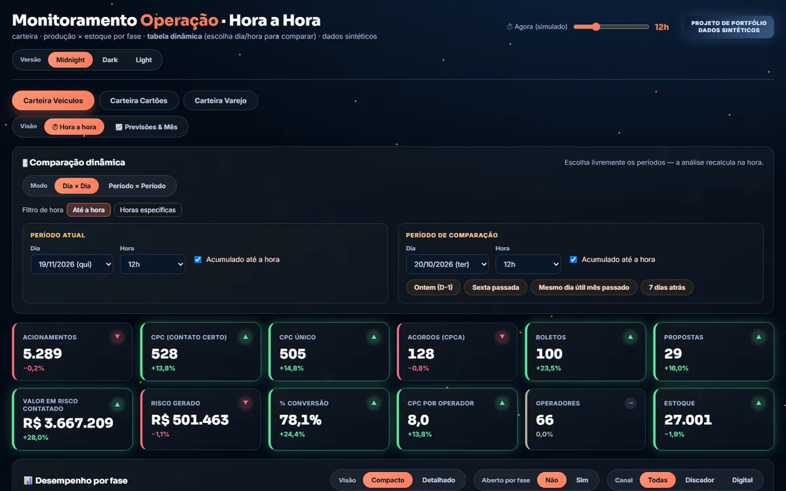

Monitoramento da operação + previsão de fechamento
PythonpandasChart.jsHTML/CSS/JSGitHub Actions
Erro de 3,2% às 14h
Previsão do fechamento do dia, fora da amostra, em 250 dias úteis; a faixa de 80% acerta 79% dos dias
✓ Placar fora da amostra✓ Alerta de deriva✓ 41 testes
- O problema
- A operação precisa saber, ao longo do dia, se vai bater a meta e por quê.
- O que o painel responde
- Produção hora a hora de três carteiras, comparação com qualquer dia, funil do acionamento ao boleto e quanto o dia e o mês vão fechar.
- Resultado
- A previsão erra 3,2% às 14h e acerta a direção em 82% dos dias às 12h; um placar mostra o histórico de acertos.
Técnica: Previsão por razão de funil
Validação: Cada dia passado é previsto só com os dias anteriores, em todas as horas de 9h a 20h; WMAPE, viés e cobertura da faixa medidos fora da amostra.
- Razão de funil com meia-vida de 30 dias e ajuste de viés
- Mês por média de dois ritmos, com faixa de 90%
- Decomposição LMDI do CPC em estoque × esforço × taxa
- Dois episódios de mudança simulados: volume e ritmo
41 testes automatizados, rodando a cada push
